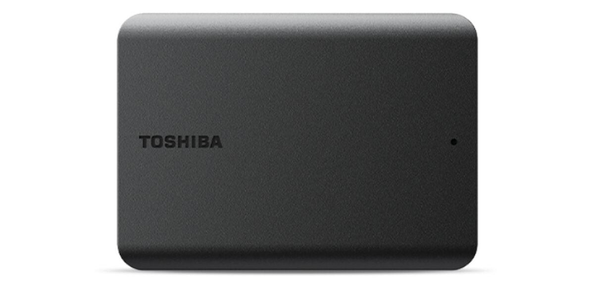
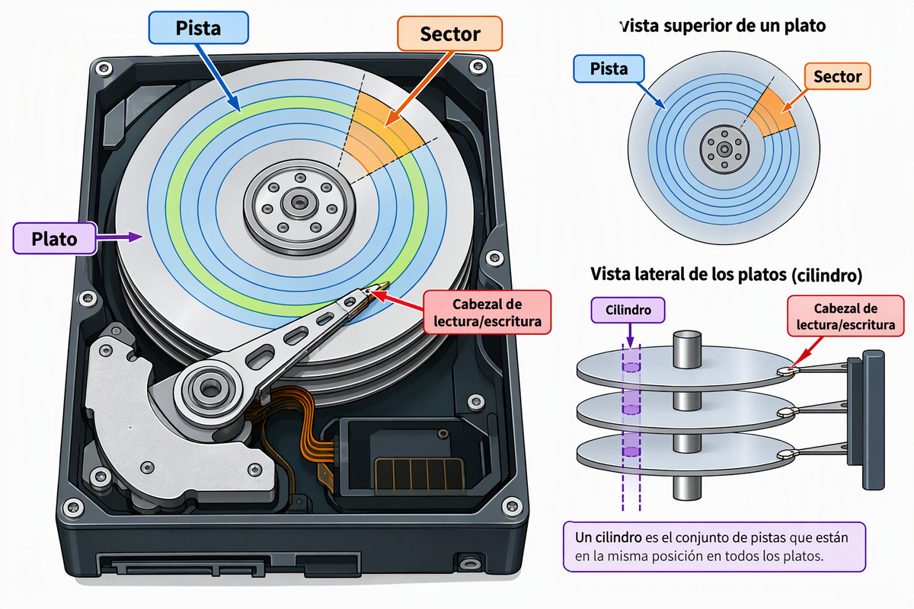
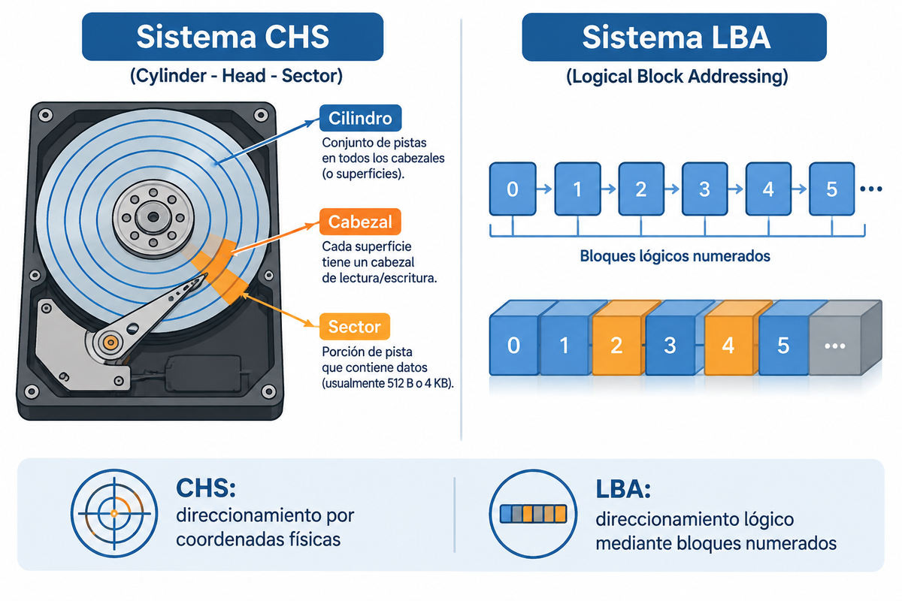
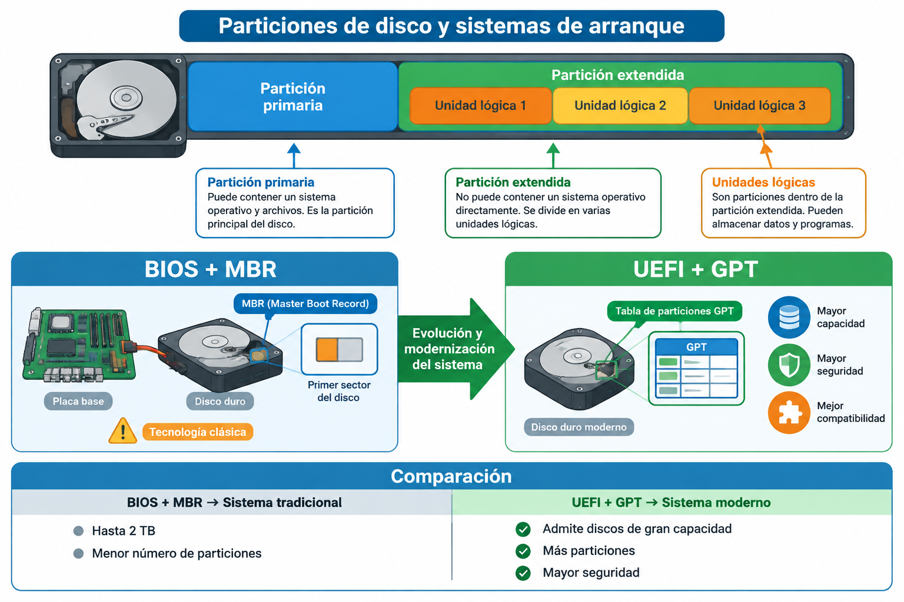

Index
- What Are Magnetic Hard Drives?
- Operation and Simple Summary
- Structure
- Partitions and Boot System
- Advantages and Disadvantages
What Are Magnetic Hard Drives?

A magnetic hard drive (HDD, short for Hard Disk Drive) is a non-volatile data storage device that uses a magnetic recording system to store and retrieve digital information.
They are one of the oldest mass storage technologies in computing and have historically stood out for offering large data storage capacities at a much lower cost per gigabyte than more modern technologies.
Operation

Magnetic hard drives use rotating platters and synchronized read/write heads. The platters spin at high speeds (for example, 5400 or 7200 revolutions per minute) while the head magnetizes or reads tiny magnetic sections of the surface without physically touching it.
By changing the orientation of magnetic particles, the zeros and ones of the binary system that make up computer files are encoded.
Structure
The structure of a hard drive is divided into two parts:
- Physical structure
- Logical structure
Physical Structure

Physically, magnetic hard drives are composed of the following internal components:
- Platters: Flat, rigid disks that make up the hard drive and provide two usable surfaces for storing information.
- Read/write head: Component responsible for hovering above the platters to read or modify their magnetic state.
- Track: Each concentric circle recorded on a platter surface.
- Cylinder: A set of corresponding tracks vertically aligned across multiple platters.
- Sector: One of the basic divisions of a track, traditionally sized at 512 bytes.
Logical Structure and Addressing

At the logical level, the disk divides its space into minimum allocation units called clusters (or allocation units), typically ranging from 512 bytes to 64 kB in size. This improves performance and reduces fragmentation through a file allocation table (such as FAT32, NTFS, Ext3, or Ext4). Two addressing systems are used to locate data:
- CHS (Cylinder-Head-Sector) System: The traditional system that locates data using three coordinates (cylinder, head, and sector). Its major historical limitation was that it could only manage drives of up to 8 GB.
- LBA (Logical Block Addressing) System: The current standard, which avoids CHS limitations by viewing the disk as a continuous sequence of sectors, each assigned a unique number.
Partitions and Boot System

A hard drive can be divided into independent subsets through partitions:
- Primary partition: The main division and the only one capable of containing an operating system.
- Extended partition and logical drives: Created to overcome the classic limitation on the number of primary partitions on a disk.
To start the computer, the system boots either through BIOS (reading the Master Boot Record or MBR from the first sector) or through the modern UEFI system, which uses GPT partition tables and offers greater security and compatibility with large-capacity drives.
Advantages and Disadvantages
Like any technology, HDDs have strengths and weaknesses that determine their current use compared to solid-state drives:
- Advantages: Their main attraction is the low cost per terabyte and their very high storage capacity, making them ideal for storing large volumes of static data such as multimedia files and backups.
- Disadvantages: They are considerably slower than SSDs, consume more power, generate noise due to their mechanical rotation, and are more vulnerable to shocks and vibrations while operating.